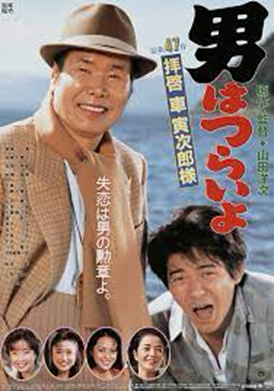

松竹によって日本(where)で1969年8月27日(when)に映画シリーズの第1作が公開され、1995年（平成7年）までに山田洋次原作・脚本・監督（一部作品除く）・渥美清主演で26年間に全48作品が公開された(what)国民的人気シリーズである。 そもそも「男はつらいよ」は、山田洋次脚本・渥美清主演で1968年に全26話のテレビシリーズとして誕生しました。これは渥美清が少年時代に見てきたテキヤたちの思い出を語ったところから、山田洋次がイメージをふくらませたものでした。最終回、主人公のフーテンの寅がハブに噛まれて死んでしまうというエピソードに視聴者からの抗議が殺到したため、脚本を手掛けた山田監督が映画化を思いつき、69年8月27日に第１作を公開したことから、シリーズの歴史が始まりました。83年、“一人の俳優が演じたもっとも長い映画シリーズ”としてギネスブックに認定。日本中から愛される作品として、渥美清さんが亡くなるまで作り続けられました。誰もが笑い元気になれる日本人の心の原風景を描きつづける本シリーズは、主人公の名前から、作品自体が「寅さん」の愛称で呼ばれることも多く、現在まで幅広い世代から愛され続けています。
「男はつらいよ」ほぼ全作に共通するストーリーは、テキ屋を営み全国を旅して生きている主人公・車寅次郎がひょんなことから生まれ故郷の東京・葛飾柴又に戻ってきては、故郷や旅の道中で出会った女性への恋心を募らせ、結局は実らなかった恋を忘れるためまた旅に出る……というもの。
制作：学習院大学 Web制作課題
名前：筋野優希
使用技術：HTML / CSS